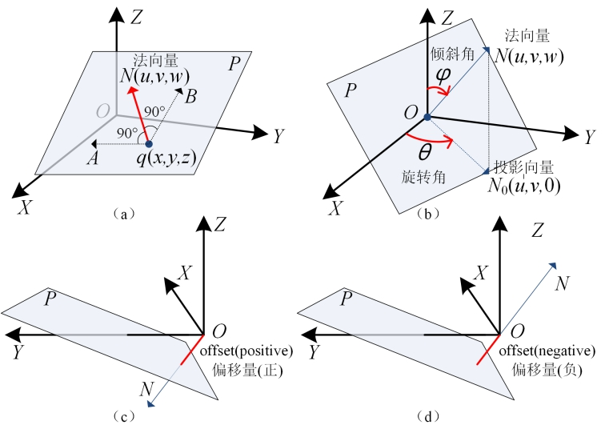
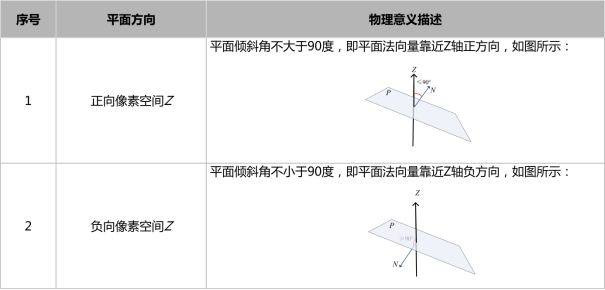

在3D测量中，往往需要对深度图像中检测区域内的三维空间点进行拟合获得一个最优平面，从而能够在这个基平面上进行投影、高度测量和体积测量等后续操作。平面拟合工具主要是根据若干个三维空间点计算得到三维平面的解析表达式。
| 分类 | 参数名称 | 参数描述 |
|---|---|---|
| 属性窗口 | 启用三维点集拟合 | 选择“是”，参数链中显示输入三维点集参数，并使用该三维点集进行平面拟合。 |
| 拟合方法 | 分为两种：面积和点。 | |
| 平面方向 | 分为两种：正像素空间和负像素空间。 |
|
| ROI类型 | 待检测区域，分为8种：整幅图像、矩形、仿射矩形、圆形、圆环、椭圆、多边形。 | |
| 启用掩模 | 是否启用掩模，选择“是”，显示掩模个数、掩膜序号、掩膜形状等参数。 | |
| 掩模个数 | 设置启用的掩模个数，取值范围为 [1, 99]。 | |
| 掩膜序号 | 当前欲设置的掩膜索引。 | |
| 掩膜ROI类型 | 当前欲设置的掩膜形状，分为6种：矩形、仿射矩形、圆形、圆环、椭圆、多边形。 | |
| 二维点集 | 拟合方法为点时显示该参数，用于指定参与拟合平面的点。 | |
| Z查询方法 | 拟合方法为点时显示该参数，分为三种：单个像素、邻域中值、邻域均值。 |
|
| 邻域数量X、Y | Z查询方法为邻域中值和邻域均值时显示该参数，用于设置邻域X、Y尺寸大小，取值范围为[1, 25]。 | |
| 图像窗口 | 深度图像 | 显示待检测的深度图像，显示为伪彩色图像。 |
| 检测区域 | 在图像上显示待检测区域。 | |
| 掩模区域 | 在图像上显示待掩模区域。 | |
| 数据链 | 深度图像 | 输入待检测的深度图像。 |
| 输入三维点集 | 进行平面拟合的三维点集，仅在属性栏参数启用三维点集拟合选择“是”时有效。 | |
| 二维线性变换 | 目标相对于模板的平移、旋转、缩放变换。 | |
| 高级界面 | 无 | 无 |
| 分类 | 参数名称 | 参数描述 |
|---|---|---|
| 监视窗口 | 深度图像 | 图像的长宽和像素大小，以及深度数据参数。 |
| 拟合平面 | 输出拟合平面结果，包括平面的法向量、偏移量、倾斜角、旋转角。 |
|
| 平面度 | 输出平面的平面度，即最大偏移-最小偏移，单位：mm。 | |
| 拟合误差 | 输出平面的拟合误差。 | |
| 平面拟合的点数 | 输出平面拟合中参与拟合的点数。 | |
| 执行结果 | 工具执行结果。 | |
| 执行时间 | 工具执行时间。 | |
| 图像窗口 | 输出图像 | 显示检测的深度图像，显示为伪彩色图像。 |
| 数据链 | 同监视窗口参数，供后续工具使用。 |
法向量：垂直于平面的向量N，表示平面在三维空间中的方向，如图1(a)所示。
倾斜角：Z轴正方向按顺时针方向与平面法向量N的夹角φ，取值范围为：[0,π] ，如图1(b)所示。
旋转角：X轴正方向按逆时针方向与法向量的投影向量N0的夹角θ，取值范围为：[0, 2π) ，如图1(b)所示。
偏移量：将原点移动到当前平面P上的距离偏移，若移动方向与法向量方向相同，偏移量为正；否则为负，如图1©、(d)所示。

平面拟合工具主要分以下三个步骤：
Step 1 设置平面方向：
在获取拟合的平面方程时，需要确定平面方向，即平面法向量的方向；平面方向共包含：正向像素空间Z和负向像素空间Z两种，其具体物理含义如下表所示。两种平面方向得到的平面法向量的数值是互为相反数的，因此，最终平面的法向量、偏移、倾斜和旋转等描述也就不同。

Step 2 设置拟合方法和检测区域
为了获取三维空间点数据需要设置拟合方法和检测区域。其中，拟合方法有：面积和点两种。基于不同的拟合方法，检测区域的设置也有所不同。
拟合方法为面积时，需要设置区域形状与掩膜，其中，区域形状支持圆、椭圆、多边形、矩形、仿射矩形或圆环段等六种检测区域设置，掩膜支持一定数量（1~99）的圆、椭圆、多边形、矩形、仿射矩形和圆环段等六种区域设置；此时，平面拟合使用的是区域形状内除去掩膜区域的三维空间点数据进行拟合。
拟合方法为点时，需要设置二维坐标与Z查询方法，其中，二维坐标是三维空间点对应在图像平面上的x、y位置坐标；设置Z查询方法主要是为了通过单个像素、邻域中值或邻域均值的查询方法获取三维空间点的z值，其中，邻域可以设置尺寸大小。此时，平面拟合使用的是二维坐标与Z查询方法得到的z值构成的三维空间点数据进行拟合。
Step 3 执行拟合和输出结果
在设置好平面方向、拟合方法和检测区域后，就可以执行平面拟合，输出的结果包括：平面的法向量、偏移量、倾斜角和旋转角，拟合的RMS误差，以及拟合平面所使用的三维点数目。
无
参见“\Samples\3D\深度图\3D测量工具.gvp”。